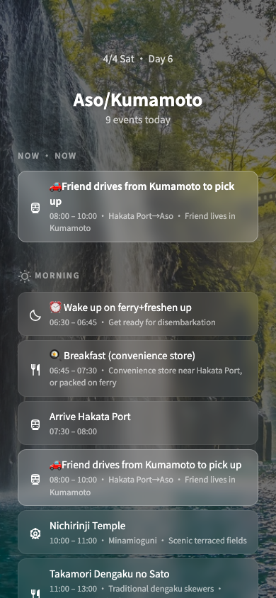
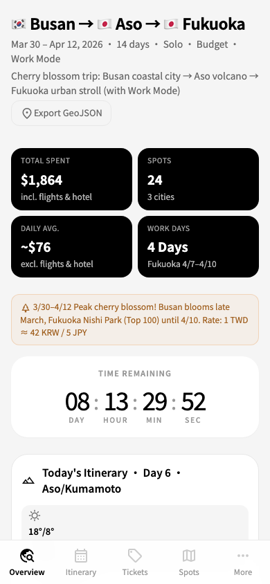
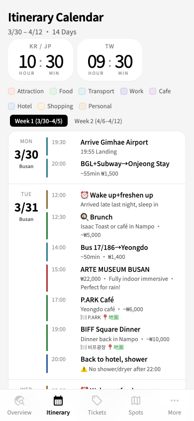
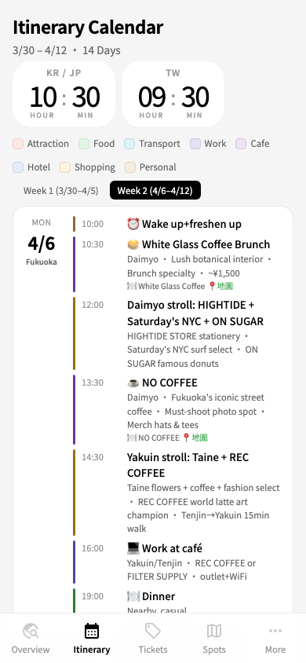
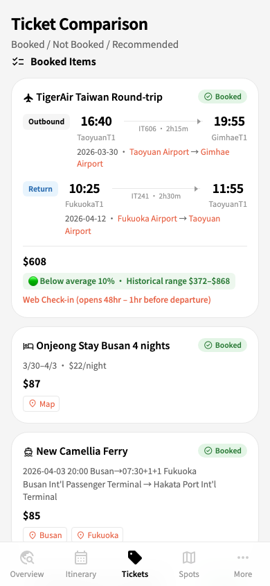
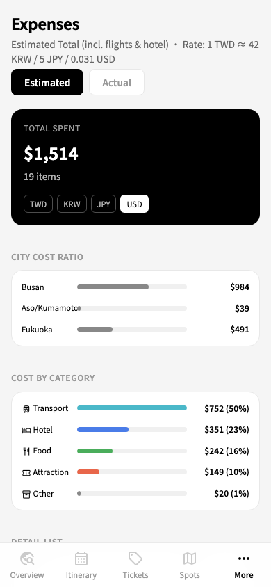
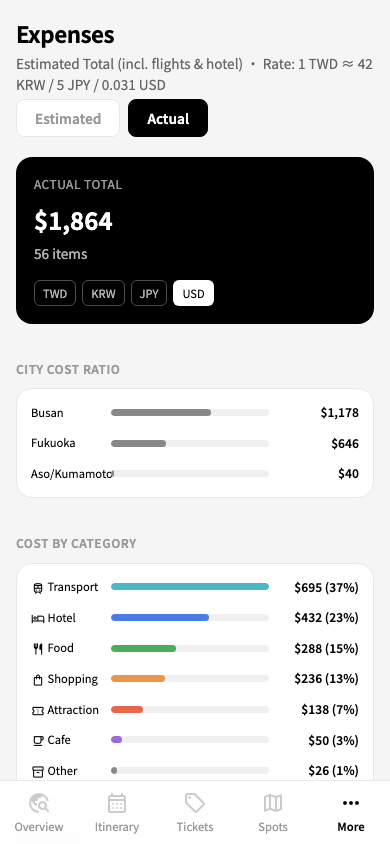
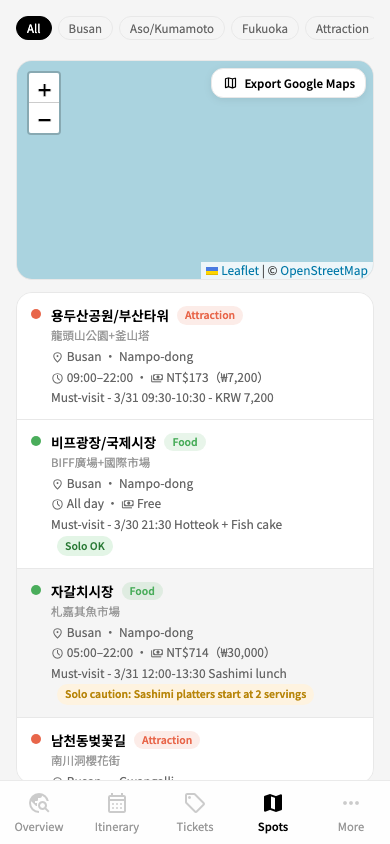
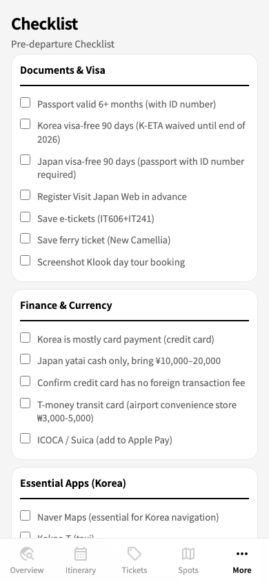
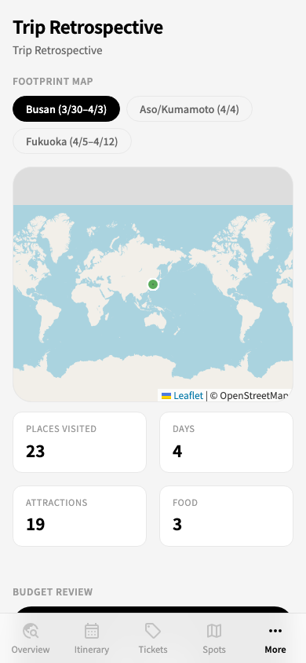

Data-driven travel planning app with real-time features, 4-language i18n, and responsive design.
全螢幕封面頁以高千穗峽谷為背景，點擊或上滑進入概覽儀表板。四格統計卡即時顯示旅費、景點數、每日均消與工作天數。


橫向滾動的天氣卡片帶，整合日出日落與攝影黃金時刻。三城市色碼一眼辨識（Busan 藍 · Aso 綠 · Fukuoka 紅）。
scrollIntoView({ inline: 'center' })）
週曆視圖搭配即時 Now Line 時間指示器。手機版為垂直事件列表，每個事件有色條分類、時間與餐廳訂位資訊。


#e8664a + 圓點，每 30 秒更新。桌面版定位於日欄，手機版插入事件之間。航班卡片含路線視覺化與歷史價格分析。三平台比價表格一目了然，住宿/渡輪/行程統一卡片設計。

預估/實際雙模式，TWD / KRW / JPY / USD 四幣別即時切換。城市與分類維度的視覺化橫條圖。


24 個景點的互動 Leaflet 地圖，支援城市/分類篩選晶片。POI 列表含獨旅提示與 Google Maps 匯出。

出發前：六大分類行前清單（勾選持久化）。旅行後：足跡地圖、預算對比、行程修改記錄。


網站會根據「現在是什麼時候」自動調整顯示內容，從出發前的待辦清單到旅行中的即時行程進度。
setInterval(1000) 每秒刷新。出發前倒數至 IT606 航班 16:40 TPE（+08:00），旅行中倒數至 4/12 23:59 JST（+09:00），結束後歸零。
.past、進行中高亮 .current。每 60 秒刷新。繁體中文 / English / 한국어 / 日本語 完整四語支持。桌面版 Sidebar、手機版 Bottom Tab Bar，響應式自適應。
data/trip.json，HTML + CSS + JS 純前端渲染。